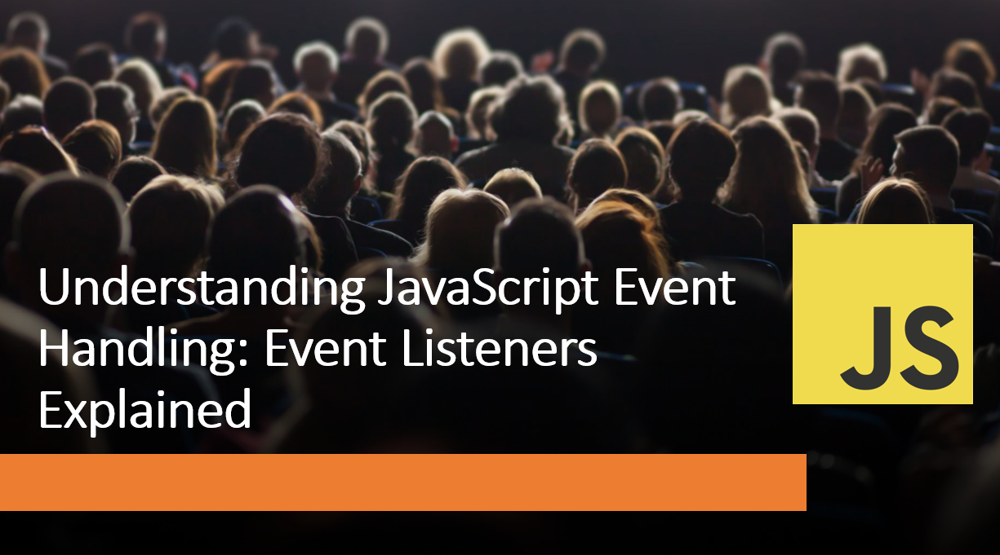

Introduction​
JavaScript event handling is a fundamental concept in web development that enables websites and applications to respond to user interactions. Events, such as clicks, key presses, or form submissions, trigger actions and allow developers to create interactive and dynamic user experiences.
In this blog post, we will dive into the world of JavaScript event handling and explain the concept of event listeners.
Suggested Tutorials 📑:​
Let's get started! 🚀
Events are actions or occurrences that happen in the browser while a user interacts with a web page. Examples of events include clicking a button, hovering over an element, or submitting a form. Events are the foundation of interactive web applications and are essential for creating dynamic user experiences.
2. Event Listeners​
An event listener is a function that waits for a specific event to occur on a particular DOM element. When the event is triggered, the associated event listener function is executed. Event listeners enable you to "listen" for events and respond with custom actions or behavior.
3. Adding Event Listeners​
To add an event listener, you need to select the target DOM element and use the addEventListener() method.
This method takes two arguments: the event type (e.g., click, keydown, submit) and the event listener function.
const button = document.querySelector("#button");
button.addEventListener("click", () => {
console.log("Button clicked!");
});
In this example:
- We select the button element using the querySelector() method and store it in a variable called button.
- We add an event listener to the button element using the addEventListener() method.
- The first argument is the event type, which is click in this case.
- The second argument is the event listener function, which logs a message to the console.
Suggested Tutorials 📑:​
4. Event Propagation​
When an event is triggered on a DOM element, it doesn't necessarily stop there.
The event can propagate (or bubble up) through the DOM hierarchy, triggering event listeners on ancestor elements. You can control event propagation using methods like stopPropagation() to prevent events from bubbling.
As an example:
const button = document.querySelector("#button");
button.addEventListener("click", (event) => {
event.stopPropagation();
console.log("Button clicked!");
});
In this example:
- We add an event listener to the button element using the
addEventListener() method. - The event listener function takes an event object as an argument.
- We use the
stopPropagation() method to prevent the event from bubbling up to ancestor elements. - The event listener function logs a message to the console.
5. Event Delegation​
Event delegation is a technique that allows you to attach a single event listener to a parent element instead of individual child elements. This is useful when you have dynamically generated content or a large number of elements with the same behavior. By using event delegation, you improve performance and reduce the number of event listeners.
As an example:
const list = document.querySelector("#list");
list.addEventListener("click", (event) => {
if (event.target.tagName === "LI") {
event.target.classList.toggle("checked");
}
});
In this example:
- We add an event listener to the list element using the
addEventListener() method. - The event listener function takes an event object as an argument.
- We use the
target property to get the target element that triggered the event. - We check if the target element is an
li element using the tagName property. - If the target element is an
li element, we toggle the checked class on the element.
Suggested Tutorials 📑:​
6. Event Object​
When an event is triggered, the browser creates an event object that contains information about the event. This object is passed as an argument to the event listener function and can be used to access information about the event. For example, you can use the event object to get the target element, the event type, or the event timestamp.
As an example:
const button = document.querySelector("#button");
button.addEventListener("click", (event) => {
console.log(event.target);
console.log(event.type);
console.log(event.timeStamp);
});
In this example:
- We add an event listener to the button element using the
addEventListener() method. - The event listener function takes an event object as an argument.
- We use the
target property to get the target element that triggered the event. - We use the
type property to get the event type. - We use the
timeStamp property to get the event timestamp.
7. Removing Event Listeners​
To remove an event listener, you use the removeEventListener() method. It requires the same event type and event listener function used when adding the event listener. Removing event listeners is crucial to avoid memory leaks and unwanted behavior when elements are no longer needed.
As an example:
button.removeEventListener('click', clickHandler);
In this example:
- We remove the event listener from the button element using the
removeEventListener() method. - The first argument is the event type, which is
click in this case. - The second argument is the event listener function, which is
clickHandler in this case.
Conclusion​
JavaScript event handling is a fundamental concept in web development that enables websites and applications to respond to user interactions. Events, such as clicks, key presses, or form submissions, trigger actions and allow developers to create interactive and dynamic user experiences.
Suggested Tutorials 📑:​
We hope this article has helped you understand the concept of event listeners and how they can be used to create interactive web applications.
Happy coding! 🚀